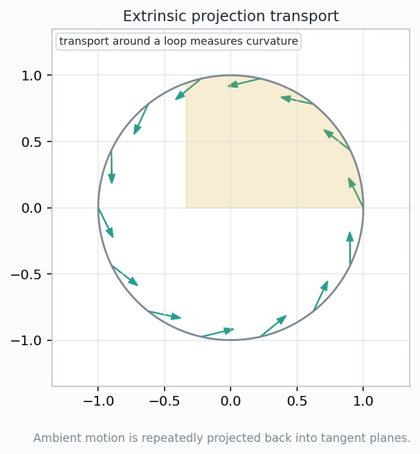
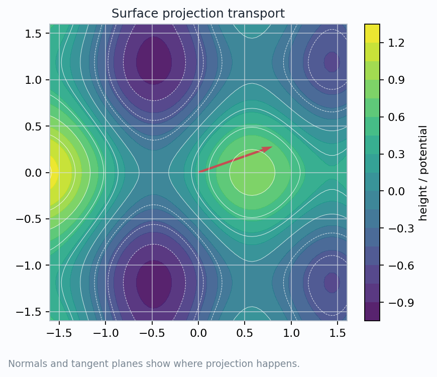
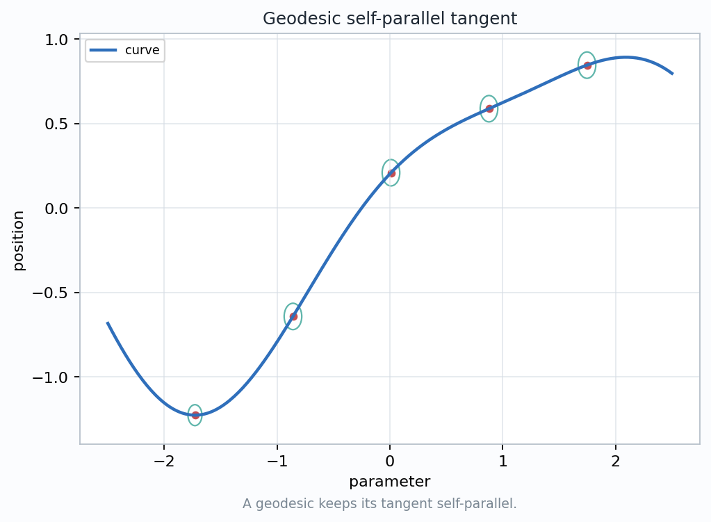
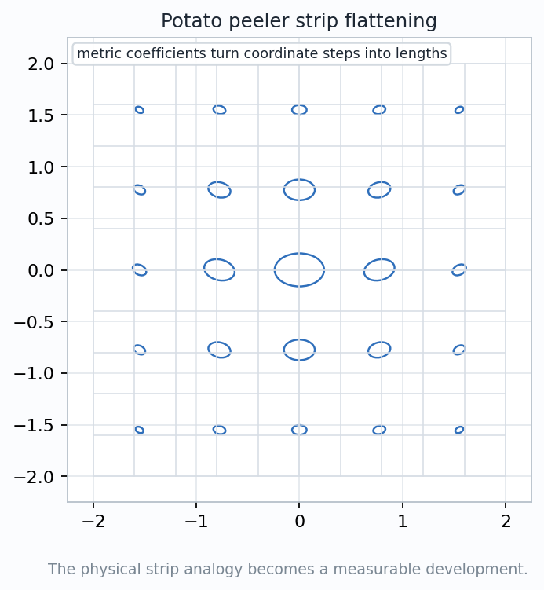

Can Change
- coordinates
- ambient drawing
- chosen frame
- sampling of the path
Using ambient space as a scaffold for the first model of parallel transport.
How can an arrow move along a curved surface while remaining a tangent arrow at every point?
Let the surrounding space move the vector, then project the result back into the surface's tangent plane.
ambient motion + tangent projection = first transport rule

Differentiate the moving vector in the surrounding Euclidean space. This derivative may point partly out of the surface.
$$\nabla_{\dot\gamma}V=P_{T_{\gamma(t)}M}\left({dV\over dt}\right)$$
The vector field is parallel when the tangent projection vanishes: all visible change is normal to the surface.
$$V_{i+1}=P_{T_{p_{i+1}}M}(V_i),\qquad \|V_{i+1}\|=1$$
A closed path need not return the vector to its starting direction. The discrepancy is a curvature signal, not a drawing error.

The surface offers a different tangent plane and normal. Transport must be checked at the point where the vector lands.
$$W=W^\top+W^\perp,\qquad W^\top\in T_pM,\quad W^\perp\parallel N_p$$
The contour map is a coordinate view of a surface. It helps locate the calculation, but parallelism is judged by tangent spaces, not by ink on the page.
Set the transported vector equal to the unit tangent $T=\dot\gamma$. A geodesic is a curve whose tangent transports itself.
$$\nabla_TT=0$$
The ambient acceleration can be nonzero, but it has no tangent component. The curve bends only as much as the surface forces it to bend.

Since $T$ is self-parallel, it provides a reference direction while other tangent vectors are transported beside it.
$$ {d\over dt}\langle V,W\rangle=0\quad\text{when}\quad \nabla_TV=\nabla_TW=0 $$
The geodesic case shows what a future intrinsic connection must preserve: tangent membership, length, and angles under comparison.

Peel a narrow strip from the surface and lay it flat without stretching. Along a geodesic, the centerline develops as a straight line.
$$ds^2=g_{11}\,du^2+2g_{12}\,du\,dv+g_{22}\,dv^2$$
The strip is a bridge from extrinsic handling to intrinsic data: the surface can be measured by lengths and angles after flattening.
The extrinsic picture is a scaffold, not the final definition. Do not confuse a convenient embedding with the geometry that survives bending without stretching.
Use the surrounding space to compare nearby arrows.
Accept only the component living in the next tangent plane.
Define the same comparison using only metric data.
Parallel means the tangent part of the change vanishes along the curve.
The tangent vector of a geodesic transports itself: $\nabla_TT=0$.
A peeled strip gives a physical model for flattening without losing metric measurements.
$$\text{extrinsic projection now}\quad\longrightarrow\quad\text{intrinsic connection later}$$